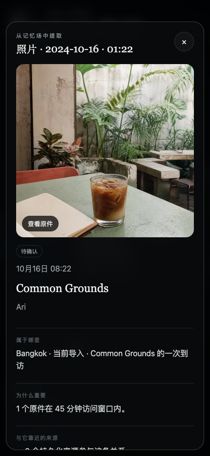
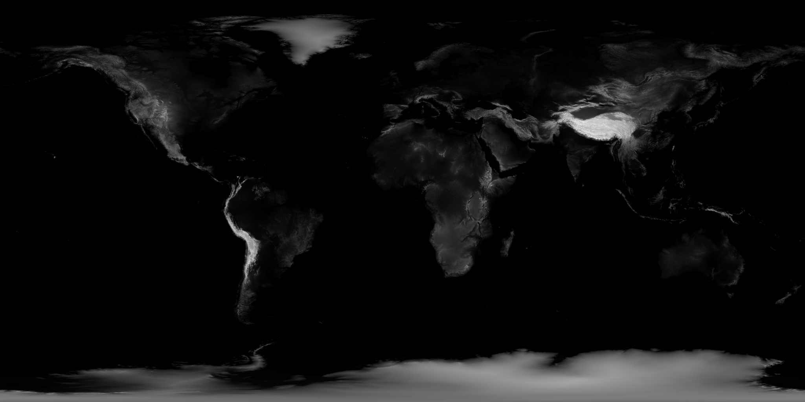
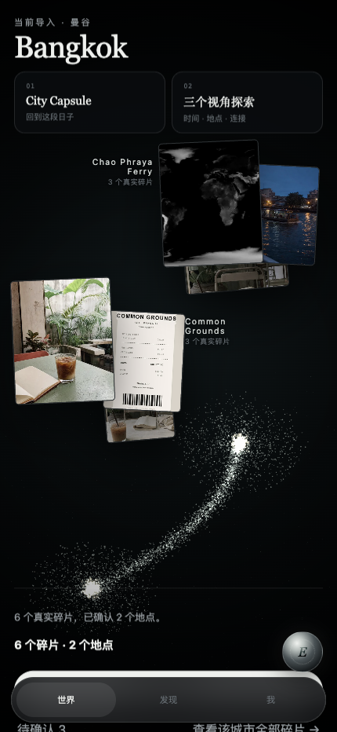
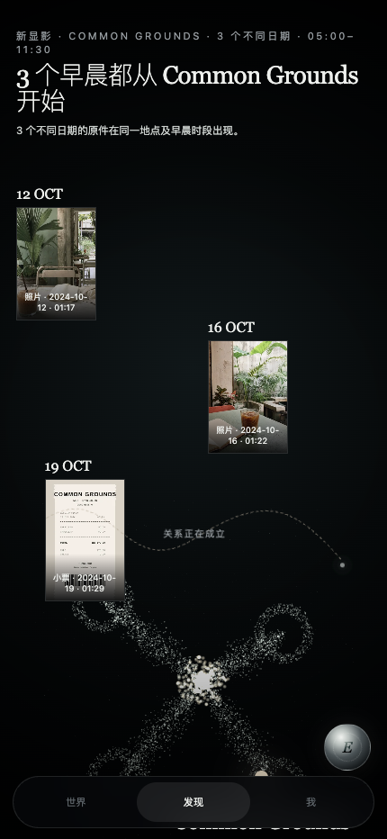
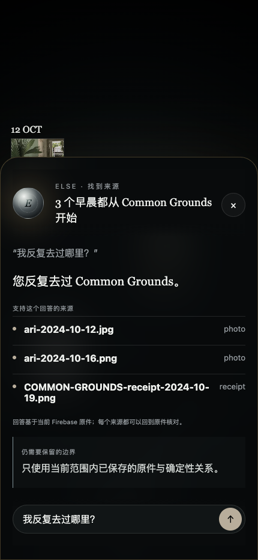
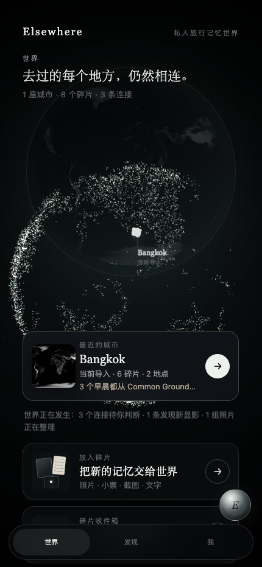

01 · PRIVATE MEMORY WORLD
照片散落，记忆没有消失
不是另一个旅行相册。是一座可以进入的私人记忆世界。
真实照片、小票、截图和文字，在同一空间里重新相连。
ELSEWHERE · TRAVEL MEMORY DATABASE
02 · REAL INPUT
REAL FILE BYTES · 8
从真实输入开始
八个文件，不是预写好的演示结论。
身份、应用完整性、原件保存和批次状态都有独立边界。
Firebase AuthApp CheckCloud StorageFirestore
浏览器实际选择本地原件；上传、处理与回执读取同一份持久化数据。
03 · DETERMINISTIC FIRST
AI 永远不是第一步
先把问题用确定性工程解决到极限。
Formatmagic bytes · MIME
HashSHA-256 · dHash
Metadatatime · GPS · source
Duplicateexact · near · cohort
EventarcStorage finalized
Routingauthoritative plan
Cloud Tasksapproved capability
Document AIreceipt only
8原件保留
1OCR 获批
0静默升级


04 · ONE MEMORY SCENE
1 CITY · 8 FRAGMENTS
数据改变空间
从世界到 Bangkok，同一批粒子重新组织。
Common Grounds、河岸与待确认地点形成由真实原件驱动的团块。
原件聚类城市世界

05 · SEARCH & SOURCE
COMMON GROUNDS
空间数据库，也必须可核对
搜索使相关碎片回流。Lens 把结论带回原件。
图片、时间、地点、处理轨迹和 Document AI 摘录都保留来源。
Fragment FieldFragment LensSource trace

06 · DISCOVERY GROWS
结论最后出现
原件 → 线索 → 关系 → 发现
三个日期先进入视野；共同地点成立后，标题才从证据中显影。
12 OCT16 OCT19 OCTCommon Grounds

07 · ELSE, WITH BOUNDARIES
E
不是普通聊天框
先回答。再给来源。最后说明不确定边界。
Gemini 只能使用已批准、可验证的当前记忆范围。
Gemini answerverified source IDsFragment Lens return


08 · VERIFIED GOOGLE ECOSYSTEM
真实云链路已验证
让旅行不只被保存，而是重新相连。
FirebaseAuth · App Check · Firestore · Storage
Eventarcstorage finalized boundary
Cloud Run3 isolated runtime identities
Cloud Tasksbudgeted execution
Document AI1 persisted receipt artifact
Gemini1 sourced answer
Elsewhere
elsewhere-memory-tyx-2026.web.app
